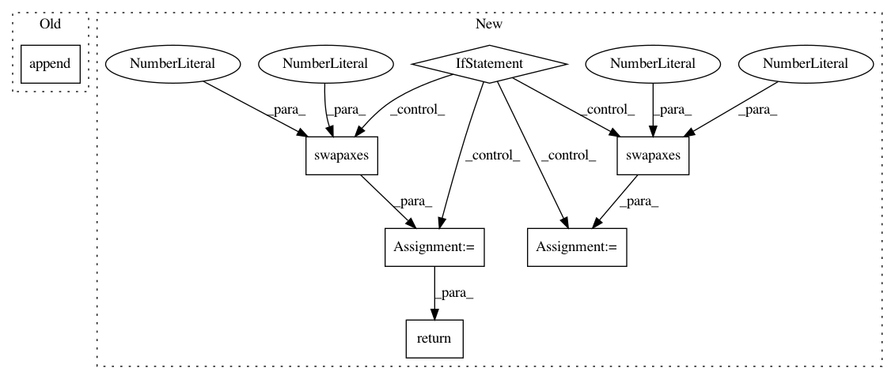

3c874575bf40e8b1fa2280371131a8f29ebb3e98,src/gluonnlp/models/roberta.py,RobertaModel,hybrid_forward,#RobertaModel#Any#Any#Any#,227
Before Change
embedding = self.get_initial_embedding(F, tokens)
contextual_embeddings, additional_outputs = self.encoder(embedding, valid_length)
outputs.append(contextual_embeddings)
if self._output_all_encodings:
contextual_embeddings = contextual_embeddings[-1]
if self.use_pooler:
After Change
def hybrid_forward(self, F, tokens, valid_length):
embedding = self.get_initial_embedding(F, tokens)
if self._layout != self._compute_layout:
contextual_embeddings, additional_outputs = self.encoder(F.np.swapaxes(embedding, 0, 1),
valid_length)
contextual_embeddings = F.np.swapaxes(contextual_embeddings, 0, 1)
else:
contextual_embeddings, additional_outputs = self.encoder(embedding, valid_length)
if self.use_pooler:
if isinstance(contextual_embeddings, list):
pooled_out = self.apply_pooling(contextual_embeddings[-1])
else:
pooled_out = self.apply_pooling(contextual_embeddings)
return contextual_embeddings, pooled_out
else:
return contextual_embeddings
def get_initial_embedding(self, F, inputs):
Get the initial token embeddings that considers the token type and positional embeddings
In pattern: SUPERPATTERN
Frequency: 3
Non-data size: 7
Instances
Project Name: dmlc/gluon-nlp
Commit Name: 3c874575bf40e8b1fa2280371131a8f29ebb3e98
Time: 2020-07-28
Author: xshiab@connect.ust.hk
File Name: src/gluonnlp/models/roberta.py
Class Name: RobertaModel
Method Name: hybrid_forward
Project Name: dmlc/gluon-nlp
Commit Name: 3c874575bf40e8b1fa2280371131a8f29ebb3e98
Time: 2020-07-28
Author: xshiab@connect.ust.hk
File Name: src/gluonnlp/models/mobilebert.py
Class Name: MobileBertModel
Method Name: hybrid_forward
Project Name: kengz/SLM-Lab
Commit Name: 8c17debc9dc6552da8c317c0c852b55f03c80c61
Time: 2017-12-24
Author: kengzwl@gmail.com
File Name: slm_lab/experiment/monitor.py
Class Name: DataSpace
Method Name: add